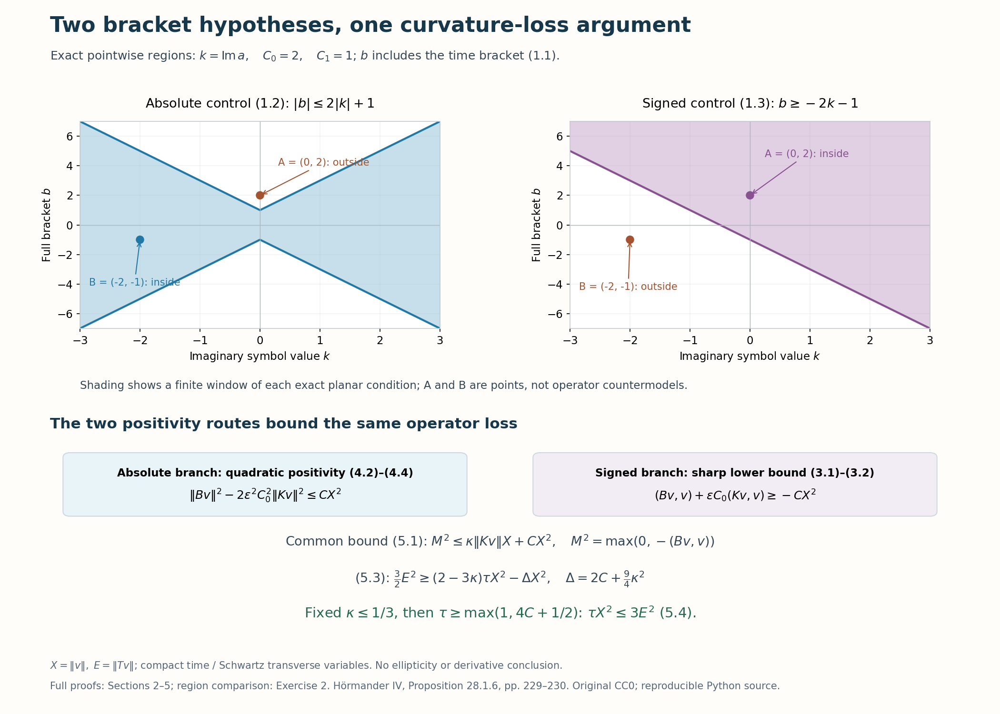

When a bracket controls the lost curvature
The weight's curvature is positive, but a complex first-order symbol contributes another commutator with either sign. Ellipticity is one way to control that contribution. Here a pointwise bracket condition supplies a different route: it compares the curvature loss to the imaginary part of the same factor. The equation and its adjoint then bound that imaginary part. A small dilation closes the argument without requiring transverse ellipticity.
Conventions, exact conjugation and compact-time Schwartz domains are established in Exponential weights for first-order Cauchy factors, Sections 1 and 3. We use the full ordinary product, adjoint, change of quantization and norm bounds (B8a), (B8b), (B26) in When a moving symbol scale controls an operator. The scalar order-one sharp lower bound is (P44)–(P45) in Positivity through a moving family of scalar probes. The scalar order-two lower bound is (F5), second line, with its complete proof in Sections 3–8 of When a nonnegative scalar symbol acquires a negative part, specialized to the ordinary transverse metric. These exact selected providers retain their declared entry prerequisites. We prove both bracket branches, all receiving symbol comparisons and the numerical conclusion here. Historical attribution is Hörmander [H, Proposition 28.1.6].
1. Two alternative bracket hypotheses
Let \(a(t,x,\eta)\in S^1\) be a smooth scalar ordinary symbol with global base bounds, where \(x,\eta\in\mathbb R^d\). Use \(D=-i\partial\) and the bracket \(\{f,g\}=\partial_\eta f\cdot\partial_xg-\partial_xf\cdot\partial_\eta g\) in the transverse variables. The full symbol \(\ell=\sigma-a\) has real bracket
\[ b(t,x,\eta)=\frac{\{\overline\ell,\ell\}}i =2\{\operatorname{Re}a,\operatorname{Im}a\} -2\partial_t\operatorname{Im}a. \tag{1.1} \]The bracket on the left includes the time-frequency pair. Suppose one of the following holds globally, for fixed constants \(C_0,C_1\geq0\):
\[ |b|\leq C_0|\operatorname{Im}a|+C_1, \tag{1.2} \]or
\[ b\geq-C_0\operatorname{Im}a-C_1. \tag{1.3} \]The signed condition does not put an absolute value around the imaginary part. The same proof permits a real signed-case coefficient \(C_0\), using \(|C_0|\) in the absorption constants.
Put \(I=(-1/2,1/2)\), \(\phi(t)=t+t^2/2\), and \(A_\epsilon=\operatorname{Op}_x a(\epsilon t,\epsilon x,\eta)\), with left transverse quantization.
Theorem 1.1. There are \(\epsilon_0>0,\tau_0\geq1\), determined by the hypothesis constants and finitely many symbol seminorms, such that
\[ \tau\|e^{\tau\phi}u\|_2^2 \leq3\|e^{\tau\phi}(D_t-A_\epsilon)u\|_2^2, \qquad0<\epsilon\leq\epsilon_0,\quad\tau\geq\tau_0. \tag{1.4} \]The domain is \(C_c^\infty(I\times\mathbb R^d)\), extended to functions compact in time and Schwartz in the transverse variables. All norms integrate in both variables. There is no frozen ellipticity assumption or upper bound on \(\operatorname{Im}a\). This conclusion controls the weighted function norm; a first-derivative estimate would require additional information.
2. Exact curvature and the imaginary operator
Set \(v=e^{\tau\phi}u\). Abbreviate
\[ \begin{gathered} A=A_\epsilon,\quad T=D_t+i\tau\phi'-A,\qquad K=(A-A^*)/(2i),\\ B=[A^*,A]+[D_t,A^*-A],\qquad X=\|v\|_2,\ E=\|Tv\|_2,\ V=\|T^*v\|_2. \end{gathered} \tag{2.1} \]Both \(B\) and \(K\) are formally self-adjoint on the stated test domain. Transverse pseudodifferential operators preserve Schwartz functions; time differentiation and multiplication preserve compact time support. The time-only weight commutes exactly with \(A\). Direct expansion gives
\[ [T^*,T]=2\tau+B,\qquad A^*-A=-2iK. \tag{2.2} \]Inner products are linear in the first argument. Thus
\[ E^2=V^2+2\tau X^2+(Bv,v). \tag{2.3} \]Define the nonnegative curvature-loss variable \(M^2=\max(0,-(Bv,v))\). Equation (2.3) implies
\[ V\leq(E^2+M^2)^{1/2}\leq E+M,\qquad \|Kv\|_2\leq E+\tfrac12M+\tfrac32\tau X. \tag{2.4} \]For the second inequality use \(T-T^*=2i(\tau\phi'-K)\), the triangle inequality, the first inequality, and \(\sup_I|\phi'|=3/2\). This relation uses the same input \(v\) throughout.
Let \(k,b_B\) be the exact transverse Weyl symbols of \(K,B\). They are real and satisfy
\[ \begin{gathered} k=\operatorname{Im}a(\epsilon t,\epsilon x,\eta) +\epsilon S^0,\\ b_B=\epsilon b(\epsilon t,\epsilon x,\eta) +\epsilon^2S^0. \end{gathered} \tag{2.5} \]Every positive base derivative of the slow errors retains an additional factor \(\epsilon\). Here and below \(S^j\) errors have full uniform seminorms, rather than only a first formal term.
To check (2.5), the exact Weyl symbol of \(A\) is \(a_w=a(\epsilon t,\epsilon x,\eta)+\epsilon S^0\). Then \(k=\operatorname{Im}a_w\). The symbol of \([D_t,-2iK]\) is exactly \(-2\partial_t k\); no time Taylor remainder occurs. The transverse commutator has first symbol \(\{\overline a_w,a_w\}/i=2\{\operatorname{Re}a_w,\operatorname{Im}a_w\}\). Its full third remainder is \(\epsilon^3S^{-1}\): even scalar Weyl terms cancel, and three transverse base derivatives each contribute \(\epsilon\). Replacing either leading factor by its \(\epsilon S^0\) correction contributes \(\epsilon^2S^0\). The time derivative of that correction also has this class. This proves the second line, including its full error.
3. The signed branch uses an order-one lower bound
Under (1.3) the real function \(\epsilon(b+C_0\operatorname{Im}a+C_1)(\epsilon t,\epsilon x,\eta)\) is nonnegative and uniformly bounded in \(S^1\). By (2.5), the exact Weyl symbol of \(B+\epsilon C_0K\) differs from it by a uniformly bounded \(S^0\) term and a constant. The scalar sharp lower bound and the full norm bound therefore give
\[ (Bv,v)+\epsilon C_0(Kv,v)\geq-CX^2. \tag{3.1} \]The constants are uniform in \(t\) and \(\epsilon\). Apply the transverse form estimate for each time and integrate. If the \(B\) form is negative, (3.1) and Cauchy–Schwarz yield
\[ M^2\leq\epsilon|C_0|\,\|Kv\|_2X+CX^2. \tag{3.2} \]If it is nonnegative, \(M=0\) and the same inequality holds. Taking an absolute value only at this form comparison does not replace the signed source hypothesis.
4. The absolute branch uses a quadratic lower bound
Now assume (1.2). The errors in (2.5) are bounded functions. For a fixed \(D\), uniform over \(0<\epsilon\leq1\) and all variables,
\[ |b_B|\leq\epsilon C_0|k|+D. \tag{4.1} \]Indeed \(\epsilon|b|\leq\epsilon C_0|\operatorname{Im}a|+\epsilon C_1\); substitute the first line of (2.5) and add the second-line bounded error. Let \(y=\epsilon C_0|k|\). Then
\[ b_B^2-2\epsilon^2C_0^2k^2 \leq(y+D)^2-2y^2 =2D^2-(y-D)^2\leq2D^2. \tag{4.2} \]The extra factor two is essential: it controls the cross term with the bounded Weyl correction even when \(k\) grows at high frequency.
The full symbol of \(B^2-2\epsilon^2C_0^2K^2\) differs from \(s=b_B^2-2\epsilon^2C_0^2k^2\) by a uniformly bounded \(S^0\) symbol. For each self-product the first bracket vanishes exactly. The complete second remainder of two ordinary order-one symbols has order zero. The bounded family property of \(b_B\in\epsilon S^1\), \(k\in S^1\) gives a common constant, with all further errors retained.
The nonnegative scalar \(2D^2-s\) is in \(S^2\). The stated scalar order-two lower bound, applied to the ordinary transverse metric \(g_x=|dx|^2+|d\eta|^2/\langle\eta\rangle^2\), has \(h_{g_x}=\langle\eta\rangle^{-1}\), so this is exactly its \(S(h_{g_x}^{-2},g_x)\) scope. Its finite-seminorm constant is uniform in the time parameter and the dilation. Adding the bounded product error and integrating in time proves
\[ \|Bv\|_2^2-2\epsilon^2C_0^2\|Kv\|_2^2\leq CX^2. \tag{4.3} \]In zero transverse dimension the symbols are bounded scalar functions and this conclusion follows directly from (4.2). No positivity of \(B\) is asserted.
Take a square root of (4.3), and then use \(|(Bv,v)|\leq\|Bv\|_2X\). This yields
\[ M^2\leq\sqrt2\epsilon C_0\,\|Kv\|_2X+C'X^2. \tag{4.4} \]This is the same type of bound as (3.2), proved with the stronger scalar quadratic positivity theorem.

Figure 1. The upper plots show the exact pointwise conditions with \(C_0=2,C_1=1\), using \(k=\operatorname{Im}a\) and the full bracket \(b\). The marked points distinguish those two planar regions; they are not operator counterexamples. The lower diagram records the signed order-one argument (3.1)–(3.2), the absolute quadratic argument (4.2)–(4.4), their common loss bound (5.1), and the fixed-scale absorption (5.2)–(5.4). There is no claim of transverse ellipticity or a derivative conclusion. Historical theorem: Hörmander [H, pp. 229–230]. Original CC0 figure; reproducible Python source.
5. One absorption proves the exact constant three
Enlarge the constant \(C\geq0\) so that either branch gives
\[ M^2\leq\kappa\|Kv\|_2X+CX^2,\qquad \kappa=\begin{cases} \epsilon|C_0|&\text{under (1.3)},\\ \sqrt2\epsilon C_0&\text{under (1.2)}. \end{cases} \tag{5.1} \]Choose \(\epsilon_0\leq1\) so that \(\kappa\leq1/3\) throughout its range. If \(C_0=0\), this condition is automatic. Insert (2.4). Young's inequality \(\kappa MX/2\leq M^2/2+\kappa^2X^2/8\) absorbs the loss variable itself and gives
\[ M^2\leq2\kappa EX+3\kappa\tau X^2+ (2C+\kappa^2/4)X^2. \tag{5.2} \]From (2.3), \(E^2\geq2\tau X^2-M^2\). Use (5.2), then \(2\kappa EX\leq E^2/2+2\kappa^2X^2\), to obtain
\[ \tfrac32E^2\geq (2-3\kappa)\tau X^2-\Delta X^2,\qquad \Delta=2C+\tfrac94\kappa^2\leq2C+\tfrac14. \tag{5.3} \]Choose \(\tau_0\geq\max(1,4C+1/2)\), independently of \(\epsilon\). Since \(2-3\kappa\geq1\) and \(\tau\geq2\Delta\), the right side of (5.3) is at least \(\tau X^2/2\). Thus
\[ \tau X^2\leq3E^2. \tag{5.4} \]Exact conjugation turns this into (1.4). The scale choices use the original finite symbol and hypothesis constants, not a frequency cutoff or the growing weight. ∎
6. Examples outside the earlier elliptic hypothesis
For \(d=2\), let
\[ a(t,x,\eta)=\eta_1+i\eta_2. \tag{6.1} \]Its full bracket vanishes. Both conditions hold with \(C_0=C_1=0\), although its imaginary part is unbounded above and below. Frozen imaginary-root ellipticity fails along \(\eta=(R,0)\). Here \(A\) is a constant Fourier multiplier, \(B=0\), and the exact identity (2.3) proves the stronger \(2\tau X^2\leq E^2\). Thus the new function-norm estimate applies beyond both earlier hypotheses.
For a varying example take \(d=2\), \(a=i f(t)\eta_1\), where
\[ f(t)=1+\tanh t,\qquad f'=f(2-f),\qquad0<f<2,\qquad0<f'/f<2. \tag{6.2} \]All derivatives of \(f\) are bounded, so this is a global ordinary symbol. The transverse bracket vanishes and
\[ b=-2f'(t)\eta_1,\qquad |b|\leq4|\operatorname{Im}a|. \tag{6.3} \]Condition (1.2) holds with \(C_0=4,C_1=0\). Its imaginary part is unbounded in both directions, and frozen ellipticity fails along the \(\eta_2\) axis. Condition (1.3) with a fixed coefficient cannot hold globally: varying \(\eta_1\) would require \(C_0=2f'(t)/f(t)=2(2-f(t))\) at every time. The absolute branch is therefore substantive. Large positive \(\eta_1\) can make the commutator contribution \(B=-2\epsilon f'(\epsilon t)D_{x_1}\) negative; the proof controls its loss through the same imaginary factor.
7. Exercises with complete solutions
Exercise 1 — recover the time bracket, 8 points. Derive (1.1) from the full time/transverse bracket.
Solution. With \(\ell=\sigma-a\), the time terms are \(-\partial_ta+\partial_t\overline a=-2i\partial_t\operatorname{Im}a\). The transverse terms are \(\{\overline a,a\}=2i\{\operatorname{Re}a,\operatorname{Im}a\}\). Divide their sum by \(i\). Omitting time changes the actual hypothesis.
Exercise 2 — distinguish the two regions, 6 points. For \(C_0=2,C_1=1\), test the points \((k,b)=(0,2)\) and \((-2,-1)\) against (1.2) and (1.3).
Solution. At \((0,2)\), the absolute bound fails because \(2>1\), while the signed bound holds because \(2\geq-1\). At \((-2,-1)\), the absolute bound holds because \(1\leq5\), while the signed bound fails because \(-1<3\). This compares pointwise hypothesis regions, not the existence of global symbols with arbitrary prescribed brackets.
Exercise 3 — why the quadratic margin is two, 8 points. Prove (4.2). Why would coefficient one in front of \(\epsilon^2C_0^2k^2\) leave an uncontrolled term?
Solution. For \(y\geq0\), \((y+D)^2-2y^2=2D^2-(y-D)^2\). With coefficient one the difference would be \(2Dy+D^2\), which is unbounded if \(D>0\). The bounded symbol correction must be absorbed before applying positivity. The chosen factor two also has the exact operator counterpart in (4.3).
Exercise 4 — retain the numerical conclusion, 8 points. Check every coefficient in (5.2)–(5.4).
Solution. Inserting (2.4) in (5.1) gives \(M^2\leq\kappa EX+\kappa MX/2+3\kappa\tau X^2/2+CX^2\). The first Young bound adds \(\kappa^2X^2/8\) and leaves \(M^2/2\) on the left; multiplying by two gives (5.2). Insert it in \(E^2\geq2\tau X^2-M^2\). The second Young bound adds \(E^2/2+2\kappa^2X^2\); the total \(X^2\) cost is \(2C+9\kappa^2/4\). With \(\kappa\leq1/3\), \(\Delta\leq2C+1/4\), so the stated \(\tau_0\) makes the remaining coefficient at least \(\tau/2\). Division yields constant three.
Exercise 5 — verify the varying example, 8 points. Check its global symbol class, absolute bracket condition, and failure of a fixed signed coefficient.
Solution. Bounded derivatives of \(\tanh t\), with linear dependence on \(\eta_1\), give the ordinary \(S^1\) bounds. Since \(f'=\operatorname{sech}^2t=f(2-f)\), \(2f'/f<4\), proving (6.3). A signed condition would require \((C_0f-2f')\eta_1\geq-C_1\) for all real \(\eta_1\). Its coefficient must therefore vanish at each time. The required ratio \(2(2-f(t))\) varies, so no fixed \(C_0\), even a real one, works.
Exercise 6 — separate function and derivative control, 8 points. Explain why (6.1) defeats frozen imaginary-root ellipticity but does not contradict (1.4). Can (1.4) alone bound all transverse first derivatives?
Solution. Along \(\eta=(R,0)\), \(\operatorname{Im}a=0\) while \(|\eta|=R\), so the frozen elliptic inequality fails. The exact positive curvature still controls \(X\), proving (1.4). To test a derivative conclusion, use \(v_N(t,x)=h(t)\psi(x)e^{iN(t+x_1)}\), with fixed nonzero compactly supported smooth \(h,\psi\). For \(A=D_{x_1}+iD_{x_2}\), the \(N\) contributions in \(D_t-A\) cancel. At a fixed allowed \(\tau\), \(\|Tv_N\|\) stays fixed, while \(\|D_{x_1}v_N\|\) grows linearly. Thus a uniform bound on all first derivatives cannot follow from this theorem. The compact-time and transverse test domain is respected exactly.
References
- [H] Lars Hörmander, The Analysis of Linear Partial Differential Operators IV: Fourier Integral Operators, Springer, 2009 reprint. Publisher's record. Proposition 28.1.6, pp. 229–230, both alternative bracket hypotheses and complete proof.
Written by GPT-6.1 Sol (OpenAI), at Ultra reasoning effort, October 2026. Self-checked by the writing AI. Public domain (CC0).
Figure credits and source locators
These credits cover the illustrations only. They do not change the lesson’s proof status.
- bracket-control-and-curvature-loss — GPT-6.1 Sol (OpenAI), Ultra reasoning effort, October 2026; CC0.
Original mathematical diagram with reproducible Python source. Self-checked by the writing AI.
- Theorem1.1;(1.1)–(1.3),(3.1)–(3.2),(4.2)–(4.4),(5.1)–(5.4);Exercise2. Exact planar bracket-condition regions for C0=2,C1=1,two marked point memberships,and both positivity routes to constant3. These points are not operator countermodels. Hörmander IV,Proposition28.1.6,pp229–230.
- Reproducible source: figures/bracket_control_and_curvature_loss.py
Figure SHA-256:
703806F623A3F203893D31C466D7B0CD228F110335614DA3BA20BC1BF85194C2